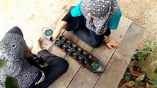

Congkak (Tulisan Jawi: چوڠكق) ialah sejenis permainan tradisional masyarakat Melayu yang sering dimainkan ketika masa lapang.
Selalunya, ia menggunakan papan kayu berlubang atau lubang di atas tanah dan kebiasaannya buah congkak menggunakan biji getah atau guli.
Lebih banyak informasi , rujuk bawah sini: